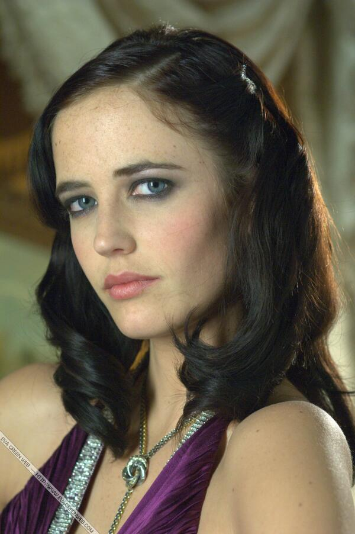

Kingdom of Heaven
7.3/10
MOVIE INFO
Still in grief over his wife's sudden death, village blacksmith Balian (Orlando Bloom) joins his long-estranged father, Baron Godfrey (Liam Neeson), as a crusader on the road to Jerusalem. After a perilous journey to the holy city, the valiant young man enters the retinue of the leprous King Baldwin IV (Edward Norton), which is rife with dissent led by the treacherous Guy de Lusignan (Marton Csokas), who wishes to wage war against the Muslims for his own political and personal gain.
| Rating | R (Strong Violence|Epic Warfare) |
| Genre | History, Drama, War, Adventure |
| Director/Producer | Ridley Scott |
| Runtime | 2h 25m |
Main Casts
Orlando Bloom
Orlando Jonathan Blanchard Copeland Bloom (born 13 January 1977) is an English actor. He made his breakthrough as the character Legolas in The Lord of the Rings film series (2001-03). He reprised his role in The Hobbit film series (2013–14). Considered by some to be the Errol Flynn of his time, he gained further notice appearing in epic fantasy, historical, and adventure films, notably as Will Turner in the Pirates of the Caribbean film series (2003-07, 2017), Paris in Troy (2004), Balian de Ibelin in Kingdom of Heaven (2005), and the Duke of Buckingham in The Three Musketeers (2011).
Eva Green
Eva Gaëlle Green (French: [eva ɡa.ɛl ɡʁɛn], Swedish: [ˈêːva ˈɡreːn]; born 6 July 1980) is a French actress. The daughter of actress Marlène Jobert, she began her career in theatre before making her film debut in Bernardo Bertolucci's The Dreamers (2003). She portrayed Sibylla, Queen of Jerusalem in Ridley Scott's historical epic Kingdom of Heaven (2005). The following year, she played Bond girl Vesper Lynd in the James Bond film Casino Royale (2006), for which she received the BAFTA Rising Star Award. Green has since starred in numerous independent films, including Cracks (2009), Womb (2010), and Perfect Sense (2011). In 2014, she played Artemisia in the 300 sequel 300: Rise of an Empire and Ava Lord in Frank Miller and Robert Rodriguez's Sin City sequel Sin City: A Dame to Kill For.
Liam Neeson
William John Neeson OBE (born 7 June 1952) is an actor from Northern Ireland. He has received several accolades, including nominations for an Academy Award, a BAFTA Award, three Golden Globe Awards, and two Tony Awards. In 2020, he was placed seventh on The Irish Times list of Ireland's 50 Greatest Film Actors. Neeson was appointed Officer of the Order of the British Empire (OBE) in 2000.
To learn more about the history background, please click here.